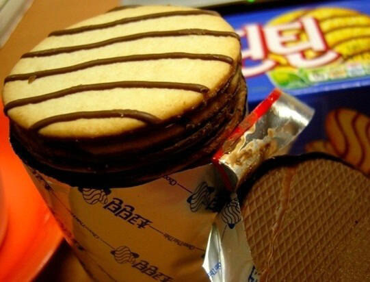

이거만한 가성비+ 맛이 있는 과자가 없었음
이전에 부활 한번 했는데 그냥 껍데기만 초코틴틴인 폐기물 자체

이거만한 가성비+ 맛이 있는 과자가 없었음
이전에 부활 한번 했는데 그냥 껍데기만 초코틴틴인 폐기물 자체
지금 같으면 줘도 안먹는데 어릴땐 정말 존맛이었지.
바코드머리한 아저씨를 찾으시오.
다이제는 별로 안좋아했지만 이건 좋았음
다이제는 먹으면 목말라서 이거 더 좋아했음
다이제 씬을 먹으렴
더 고급스러운 빈츠는 어떠니?
하몬스 먹고 싶다..